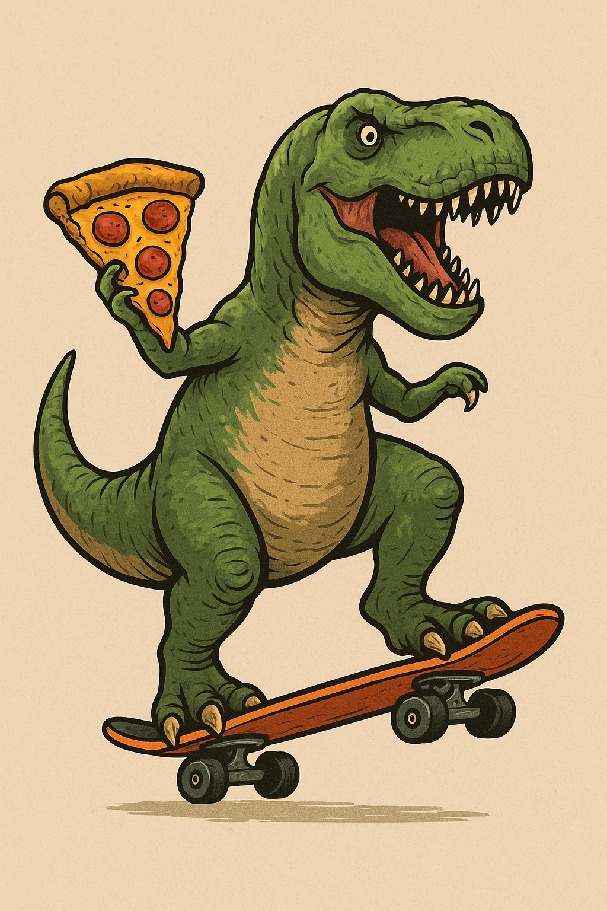

Mijn grootste hobby is freerunnen:
Mijn favoriete serie is te vinden op YouTube:
kasteelHallo! Ik ben dani en ik hou van freerunnen, 3D-printen en het maken van creatieve projecten. In mijn vrije tijd experimenteer ik graag met nieuwe hobby's en leer ik graag nieuwe dingen.
